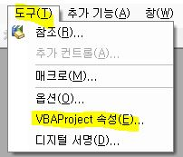
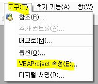

매크로 소스 보기 : Alt + F11
매크로 삭제 : 트리 구조에서 마우스 오른쪽 버튼 - 삭제
도구 - VBAProject 속성
- 읽기전용 체크 : 소스 안보이게 패스워드 확인함
- 프로젝트 속성보기 암호 : 별루, 말그대로임, 프로젝트 속성볼 때 패스워드 묻는 것으로 이것만하면 매크로 수정 가능


매크로 소스 보기 : Alt + F11
매크로 삭제 : 트리 구조에서 마우스 오른쪽 버튼 - 삭제
도구 - VBAProject 속성

. 데이터 - 그룹 (선택하면 만들면, 그 다음 줄(열)에 ± 버튼이 생김
. 주위에서 사용하는 것을 보고 관심이 가지게 된 함수
. 기존 조건절을 여러 개를 사용할 수 있게 된 것임
. 영역을 특정한 이름으로 정의하여 관리
. 셀속성에서 이름 정의
. <수식 - 이름관리자>에서 수정 가능
. 지정한 위치에서 이동
. offset(영역, row, col)
. =OR($A2="X") : A2셀이 "X"인 경우 조건부서식 적용
주의) 여러줄 적용시 $ 값 잘 사용합시다 ^^
. hyperlink ("URL", "텍스트명")
. hyperlink ("#'시트명'!A1", "바로가기") : 현재 열려져 있는 파일의 하이퍼링크
. indirect( 셀주소 ) : "TASK_LIST!C" & A4
. vlookup( 1, 2, 3, 4)
1 : 찾고자 하는 값
2 : 찾을 영역
3 : 찾았으면 몇번째 값을 가져갈까요?
4 : false : 정확하게 일치하는 값을 찾음 (주의)
. match : 3번째 값을 숫자로써 정의하지 않고 필드명으로 정의 : 변경시 관리 쉬움
vlookup (1, 2, match(컬럼명셀값, 컬럼명배열, false), false)